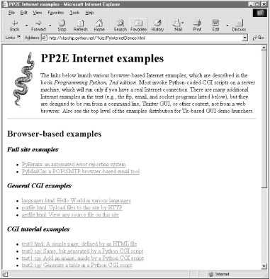

| I l@ve RuBoard |
|
12.2 What's a Server-Side CGI Script?Simply put, CGI scripts implement much of the interaction you typically experience on the Web. They are a standard and widely used mechanism for programming web site interaction. There are other ways to add interactive behavior to web sites with Python, including client-side solutions (e.g., JPython applets and Active Scripting), as well as server-side technologies, which build upon the basic CGI model (e.g., Active Server Pages and Zope), and we will discuss these briefly at the end of Chapter 15, too. But by and large, CGI server-side scripts are used to program much of the activity on the Web. 12.2.1 The Script Behind the CurtainFormally speaking, CGI scripts are programs that run on a server machine and adhere to the Common Gateway Interface -- a model for browser/server communications, from which CGI scripts take their name. Perhaps a more useful way to understand CGI, though, is in terms of the interaction it implies. Most people take this interaction for granted when browsing the Web and pressing buttons in web pages, but there is a lot going on behind the scenes of every transaction on the Web. From the perspective of a user, it's a fairly familiar and simple process:
And, believe it or not, that simple model is what makes most of the Web hum. But internally, it's a bit more complex. In fact, there is a subtle client/server socket-based architecture at work -- your web browser running on your computer is the client, and the computer you contact over the Web is the server. Let's examine the interaction scenario again, with all the gory details that users usually never see.
In other words, CGI scripts are something like callback handlers for requests generated by web browsers that require a program to be run dynamically; they are automatically run on the server machine in response to actions in a browser. Although CGI scripts ultimately receive and send standard structured messages over sockets, CGI is more like a higher-level procedural convention for sending and receiving information between a browser and a server. 12.2.2 Writing CGI Scripts in PythonIf all of the above sounds complicated, relax -- Python, as well as the resident HTTP server, automates most of the tricky bits. CGI scripts are written as fairly autonomous programs, and they assume that startup tasks have already been accomplished. The HTTP web server program, not the CGI script, implements the server-side of the HTTP protocol itself. Moreover, Python's library modules automatically dissect information sent up from the browser and give it to the CGI script in an easily digested form. The upshot is that CGI scripts may focus on application details like processing input data and producing a result page. As mentioned earlier, in the context of CGI scripts, the stdin and stdout streams are automatically tied to sockets connected to the browser. In addition, the HTTP server passes some browser information to the CGI script in the form of shell environment variables. To CGI programmers, that means:
The most complex parts of this scheme include parsing all the input information sent up from the browser and formatting information in the reply sent back. Happily, Python's standard library largely automates both tasks:
We'll study both of these interfaces in detail later in this chapter. For now, keep in mind that although any language can be used to write CGI scripts, Python's standard modules and language attributes make it a snap. Less happily, CGI scripts are also intimately tied to the syntax of HTML, since they must generate it to create a reply page. In fact, it can be said that Python CGI scripts embed HTML, which is an entirely distinct language in its own right. As we'll also see, the fact that CGI scripts create a user interface by printing HTML syntax means that we have to take special care with the text we insert into a web page's code (e.g., escaping HTML operators). Worse, CGI scripts require at least a cursory knowledge of HTML forms, since that is where the inputs and target script's address are typically specified. This book won't teach HTML in-depth; if you find yourself puzzled by some of the arcane syntax of the HTML generated by scripts here, you should glance at an HTML introduction, such as O'Reilly's HTML and XHTML: The Definitive Guide. 12.2.3 Running Server-Side ExamplesLike GUIs, web-based systems are highly interactive, and the best way to get a feel for some of these examples is to test-drive them live. Before we get into some code, it's worth noting that all you need to run the examples in the next few chapters is a web browser. That is, all the Web examples we will see here can be run from any web browser on any machine, whether you've installed Python on that machine or not. Simply type this URL at the top:[1]
http://starship.python.net/~lutz/PyInternetDemos.html That address loads a launcher page with links to all the example files installed on a server machine whose domain name is starship.python.net (a machine dedicated to Python developers). The launcher page itself appears as shown in Figure 12-1, running under Internet Explorer. It looks similar in other browsers. Each major example has a link on this page, which runs when clicked. Figure 12-1. The PyInternetDemos launcher pageThe launcher page, and all the HTML files in this chapter, can also be loaded locally, from the book's example distribution directory on your machine. They can even be opened directly off the book's CD (view CD-ROM content online at http://examples.oreilly.com/python2)and may be opened by buttons on the top-level book demo launchers. However, the CGI scripts ultimately invoked by some of the example links must be run on a server, and thus require a live Internet connection. If you browse root pages locally on your machine, your browser will either display the scripts' source code or tell you when you need to connect to the Web to run a CGI script. On Windows, a connection dialog will likely pop up automatically, if needed. 12.2.3.1 Changing server-side examplesOf course, running scripts in your browser isn't quite the same as writing scripts on your own. If you do decide to change these CGI programs or write new ones from scratch, you must be able to access web server machines:
Unlike the last chapter's examples, Python server-side scripts require both Python and a server. That is, you'll need access to a web server machine that supports CGI scripts in general and that either already has an installed Python interpreter or lets you install one of your own. Some Internet Service Providers (ISPs) are more supportive than others on this front, but there are many options here, both commercial and free (more on this later). Once you've located a server to host your scripts, you may modify and upload the CGI source code file from this book's CD to your own server and site by FTP. If you do, you may also want to run two Python command-line scripts on your server after uploading: fixcgi.py and fixsitename.py, both presented later in this chapter. The former sets CGI script permissions, and the latter replaces any starship server name references in example links and forms with your own server's name. We'll study additional installation details later in this chapter, and explore a few custom server options at the end of Chapter 15. 12.2.3.2 Viewing server-side examples and outputThe source code of examples in this part of the book is listed in the text and included on the book's CD (see http://examples.oreilly.com/python2). In all cases, if you wish to view the source code of an HTML file, or the HTML generated by a Python CGI script, you can also simply select your browser's View Source menu option while the corresponding web page is displayed. Keep in mind, though, that your browser's View Source option lets you see the output of a server-side script after it has run, but not the source code of the script itself. There is no automatic way to view the Python source code of the CGI scripts themselves, short of finding them in this book or its CD. To address this issue, later in this chapter we'll also write a CGI-based program called getfile, which allows the source code of any file on this book's web site (HTML, CGI script, etc.) to be downloaded and viewed. Simply type the desired file's name into a web page form referenced by the getfile.html link on the Internet demos launcher page, or add it to the end of an explicitly typed URL as a parameter like this: http://.../getfile.cgi?filename=somefile.cgi In response, the server will ship back the text of the named file to your browser. This process requires explicit interface steps, though, and much more knowledge than we've gained thus far, so see ahead for details. |
| I l@ve RuBoard |
|